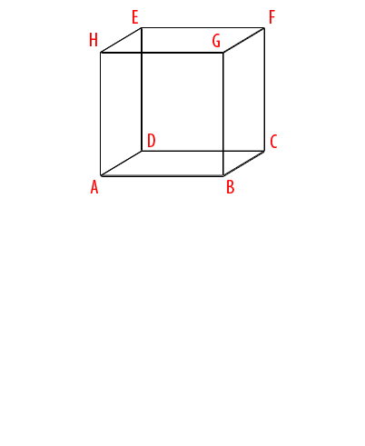
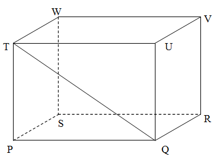
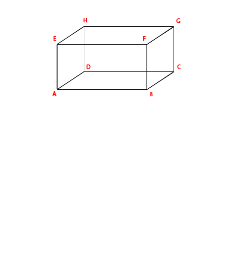
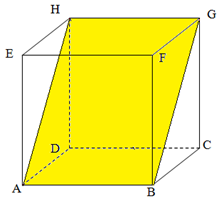
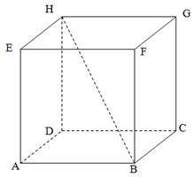
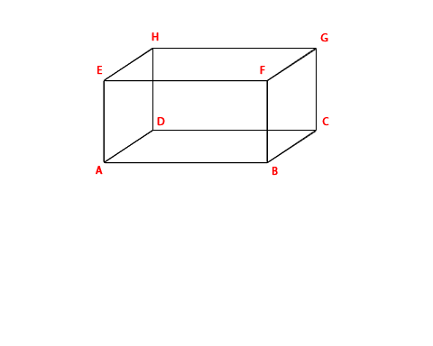
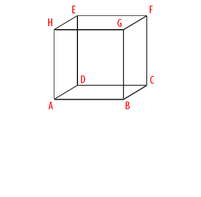

Perhatikan pernyataan dibawah ini:
1. Memiliki 6 sisi yang berbentuk persegi panjang
2. Memiliki 6 sisi yang berbentuk persegi
3. Memiliki 12 rusuk yang sama panjang
4. Memiliki 4 diagonal ruang yang ukurannya sama panjang
Manakah pernyataan diatas yang merupkan sifat-sifat kubus ?
Perhatikan pernyataan dibawah ini:
1. Memiliki 6 buah bidang diagonal yang berbentuk persegi panjang yang memiliki ukuran yang sama
2. Memiliki 12 rusuk, rusuk-rusuk yang sejajar atau yang berhadapan memiliki ukuran sama panjang
3. Memiliki 12 diagonal bidang yang ukurannya sama panjang
4. Memiliki 4 diagonal ruang yang ukurannya sama panjang
Manakah pernyataan diatas yang bukan merupkan sifat-sifat balok ?

Animasi diatas menjelaskan salah satu sifat kubus. Sifat kubus apa yang dijelaskan oleh animasi diatas ?

Gambar QT pada sebuah balok diatas disebut ?
Bentuk diagonal bidang balok adalah ?
Animasi dibawah menjelaskan salah satu sifat balok. Sifat balok apa yang dijelaskan oleh animasi diatas adalah ?

Bagian kubus yang berwarna kuning disebut ?

BH dalam sebuah kubus dibawah disebut ?

Animasi dibawah menjelaskan salah satu sifat balok. Sifat balok apa yang dijelaskan oleh animasi dibawah ?

Animasi dibawah menjelaskan salah satu sifat kubus. Sifat kubus apa yang dijelaskan oleh animasi dibawah ?
